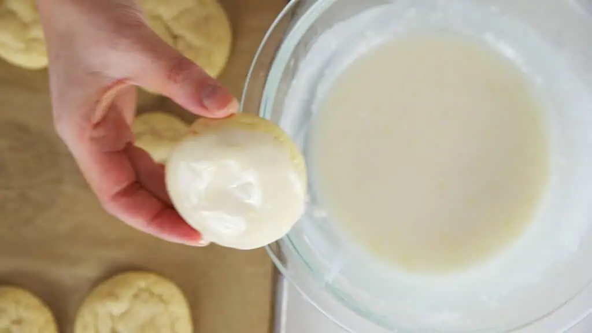

For The icing
Here is what you need to grab to make your lemon icing -powdered sugar (or confectioners sugar), vanilla extract, lemon zest and juice.
Once the cookies have cooled, go ahead and make your lemon icing. This icing is so simple to make and adds that extra punch of lemon flavor to this lemon cookie recipe.
In a small mixing bowl, combine the fresh lemon juice, lemon zest, and powdered sugar and whisk until it’s smooth. If you are finding the lemon glaze is too thick add a touch more liquid to thin it our. Or if it’s too thin, add a a little more powdered sugar.
You can ice these cookies with an offset spatula or simply give them a dunk into your lemon glaze which is my preferred method, letting the excess drip off.
